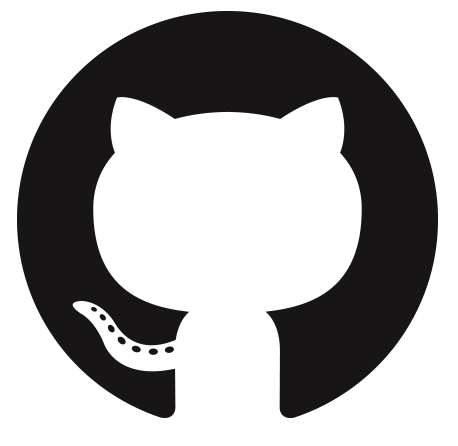
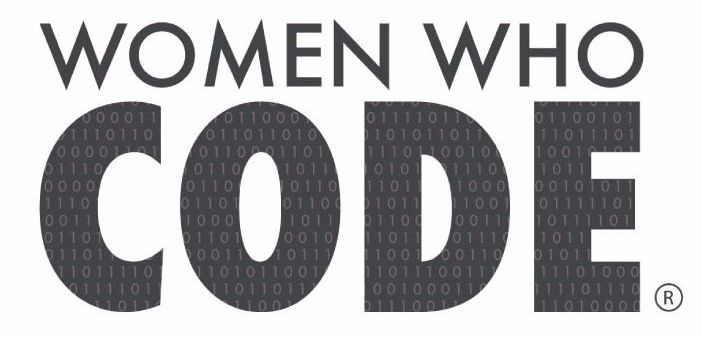

Projetos
Um pouco mais de quem sou e o que faço:

Um pouco mais sobre mim...

Pequenos projetos...

Membro do Woman Who Code
Olá! Meu nome é Maria Beatriz Germano.
Sou desenvolvedora para web, moro em Recife - PE, Brasil.
Eu amo programar porque isso me dá a oportunidade de construir sistemas e ideias que tem um impacto na vida das pessoas. Sou apaixonada por compartilhar conhecimentos e conhecer novas pessoas.
Um pouco mais sobre mim...
Pequenos projetos...
Membro do Woman Who Code